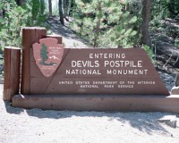
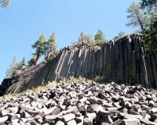
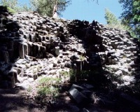

 |
ここは無料なんですが… |
|
これがそれだ！思ったとおりたいしたことなかったのはよしとしよう。ちなみに、この手の景色なら、北アイルランドのGiant's Causwayが超お勧め。 |
 |
 |
裏から見た様子。ますますたいしたことない。 |
国定公園自体は無料なんですが、ここら辺一体が公園になっていて、これに対し入園料が必要です。ということで、何の策略かナショナルパークパスは使えません。これには大憤慨です。
無料にするだけあって、国定公園自体はたいしたことないです。行かない事をお勧めします。お金の無駄です。
Written : 2004.04.04